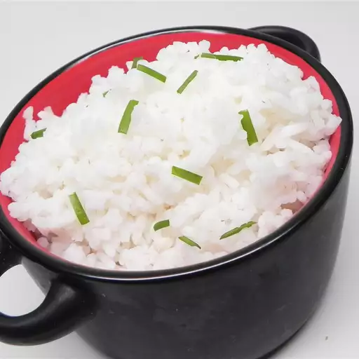

White Rice

Description
This simple rice uses only a few ingredients to make a delicious base to a meal that is sure to taste great.
Ingredients
- 2 cups Jasmine Rice
- 4 cups water
- 2 tbsp butter
- 3 tsp salt
Steps
- Rinse rice thoroughly until water runs clear
- Bring water to a boil, add salt and butter to water
- Add rice and bring back to simmer
- Turn heat to low, cover pot and cook for 18 minutes
- Remove from heat, uncover, and enjoy